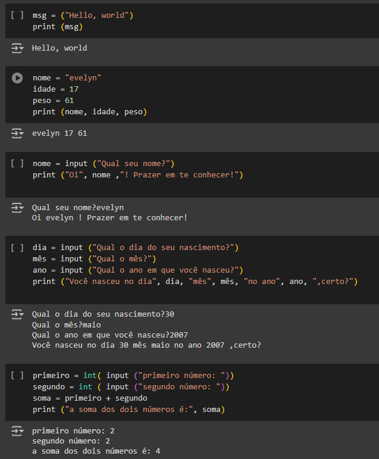

MEUS PROJETOS
Aqui, mostrarei tudo que fiz e posso fazer nesses últimos tempos!
BANANA DE CROCHÊ!!
Aqui eu estava apenas experimentando e ainda explorando oque poderia fazer, até que achei uma BANANA de crochê! Fiquei muito curiosa e decidi fazer. No começo estava confusa e uma saiu esquisitinha toda torta, oque é normal: eu estava no começo! Agora, eu já tenho três mini-bananas e estou pensando em fazer um cacho inteirinho!
Todo amigurumi de crochê tem uma RECEITA, que é praticamente o passo-a-passo de como fazê-lo. A banana também tem! Abaixo eu mostrarei a receita dela:
TESTES DA MATÉRIA DE LÓGICA
TOUCA DE CROCHÊ PARA RECÉM-NASCIDOS!!
PRIMEIRA ARTE P/ O BLSKY!